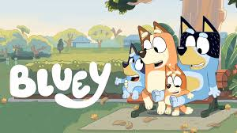
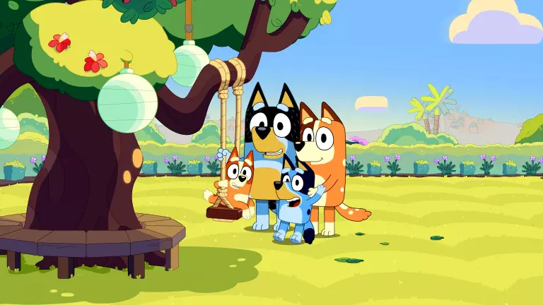
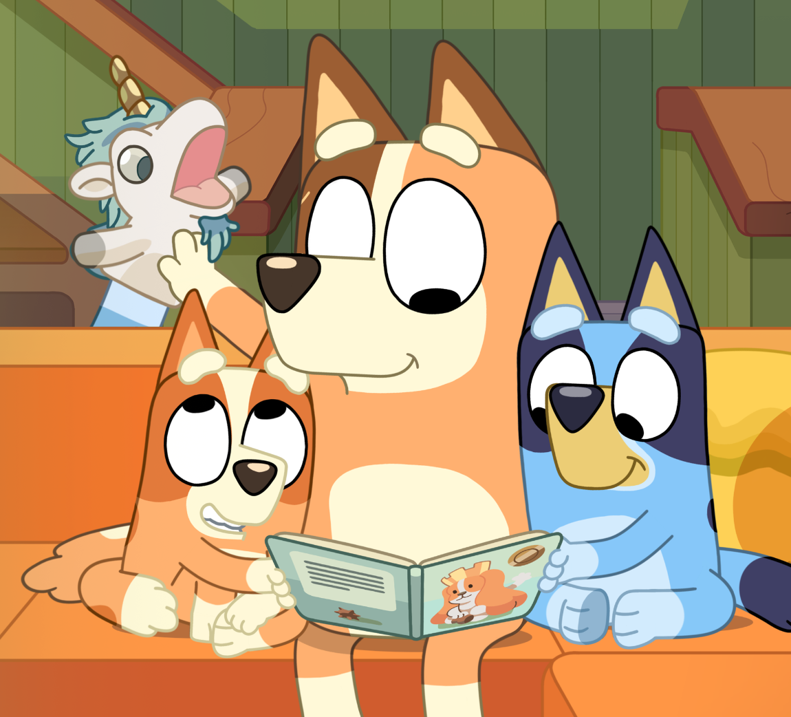
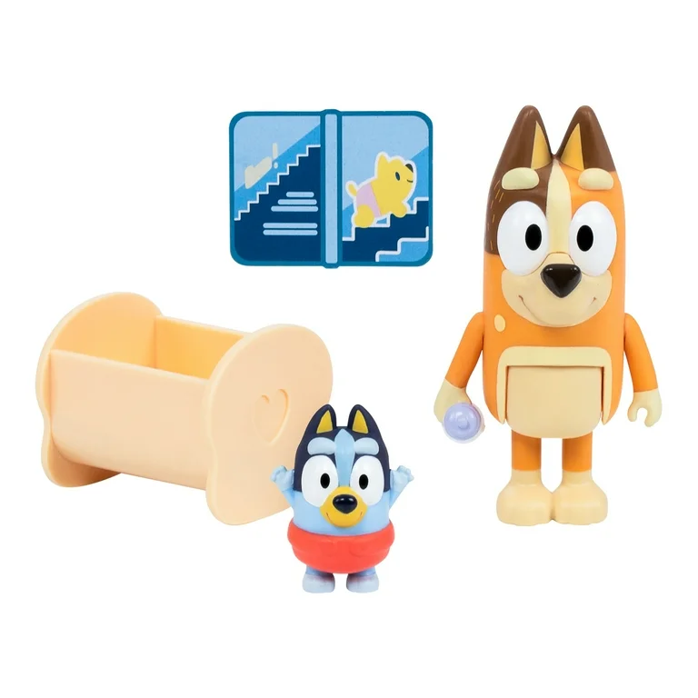
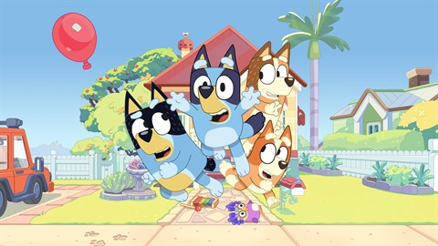

Bluey is an Australian animated preschool television series which premiered on ABC Kids on 1 October 2018. The program was created by Joe Brumm and is produced by Queensland-based company Ludo Studio. It was commissioned by the Australian Broadcasting Corporation and the British Broadcasting Corporation, with BBC Studios holding global distribution and merchandising rights. The series made its international premiere on Disney Junior in the United States and is released widely on Disney+.

Meet Bluey Heeler, a spirited six-year-old Blue Heeler pup with a boundless imagination and a zest for life! She lives with her fun-loving archaeologist dad Bandit, her warm-hearted mom Chilli who works part-time at airport security, and her adorable younger sister Bingo. Together, this playful family turns everyday moments into exciting adventures, often joined by their friendly neighbors like Lucky the sporty Labrador and Judo the spunky Chow Chow. Whether it’s backyard games or pretend quests, their world is full of creativity, laughter, and heart. The fun doesn’t stop there—Bluey’s extended family adds even more color to the mix! From her cheeky cousins Muffin and baby Socks to her uncles Stripe and Radley, plus doting grandparents on both sides, every gathering is full of personality and playful chaos. At school, Bluey and her friends—like Chloe the Dalmatian and Rusty the Kelpie—dive into imaginative escapades under the gentle guidance of their teacher, Calypso. With a cast of lovable characters voiced by real kids, Bluey’s world is a whirlwind of wonder, friendship, and fun.

The Episodes section is your go-to guide for exploring all of Bluey's adventures, neatly organized by season. Whether you're a new viewer or a longtime fan, you can easily browse through each episode to find your favorites or discover new ones. Each season is laid out clearly so you can track Bluey's growth, friendships, and imaginative play across time. Every episode features a short, fun summary to give you a quick idea of the story, along with vibrant screenshots or clips that capture key moments. Whether it's a backyard game turned wild quest or a sweet sibling moment, you’ll get a preview of what makes each episode special before diving in. Visuals help bring the magic of the show to life, even before you hit play. To make things even more interactive, fan-favorite episodes are highlighted with special badges and ratings based on audience feedback. Parents will also appreciate the built-in guides that offer insight into the lessons and themes of each episode—perfect for sparking family conversations or choosing age-appropriate stories for younger kids.
The Games & Activities section is a playful paradise where kids can dive into fun inspired by Bluey’s world! Here, they’ll find simple and colorful browser games designed to entertain and engage. From memory match challenges and digital coloring pages to adventurous obstacle courses, these interactive games are perfect for sparking creativity and improving skills while having loads of fun. For fans who prefer hands-on fun, the site offers a variety of printable activity sheets. Kids can enjoy mazes that twist and turn through Bluey’s neighborhood, connect-the-dots pictures that reveal familiar characters, and spot-the-difference puzzles that challenge their attention to detail. These activities are great for quiet time, travel entertainment, or screen-free play. Whether online or offline, these games and printables bring the spirit of Bluey into everyday playtime. They’re easy to access, family-friendly, and encourage imaginative fun—just like the show itself!

Step into Bluey’s World with an interactive map that brings her vibrant neighborhood to life! Fans can explore all the familiar places from the show—like Bluey’s cozy home, the cheerful schoolyard, and the bustling park—through colorful, clickable scenes filled with animation and charm. Each location is packed with surprises! Click on the Heeler household to uncover mini-games or peek inside Bluey and Bingo’s bedroom for a short story adventure. Over at the school, kids can meet Bluey’s classmates and take part in fun classroom activities, while the park might hold a game of keepy-uppy or a surprise visit from a favorite character. Whether you're revisiting your favorite moments or discovering new ones, Bluey’s World turns the show's settings into an exciting digital playground. It’s the perfect place for kids (and grown-ups!) to play, learn, and dive deeper into the imaginative universe of Bluey.
